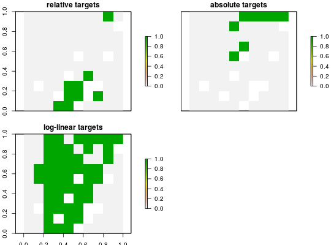

Targets are used to specify the minimum amount or proportion of a feature's
distribution that needs to be protected. Below is a list of different
targets that can be added to a conservation planning problem.
add_relative_targets(x, targets) add_absolute_targets(x, targets) add_loglinear_targets(x, lower_bound_amount, lower_bound_target, upper_bound_amount, upper_bound_target) add_default_targets(x)
ConservationProblem-class object.numeric targets for features. If all features should
have the same target, targets can be a single number. Otherwise,
targets should be a numeric vector specifying a
target for each feature.numeric lower bound for the total amount
of the features.numeric relative target that should be
applied to features with a total amount that is less
than or equal to lower_bound_amount.numeric upper bound for the total amount
of features.numeric relative target that should be
applied to features with a total amount that is greater
than or equal to upper_bound_amount.ConservationProblem-class object with the target added
to it.
relative_targetsx should have a single value if all features
have the same target. Otherwise, the vector should have a value for
each feature. In this case, targets are assigned to features based
on the their position in the argument to x and the
feature when specifying the problem.absolute_targetsx is treated the same as for relative_targets.loglinear_targetsdefault_targetsconstraints, objectives,
problem, add_feature_weights.
# create basic problem p <- problem(sim_pu_raster, sim_features) %>% add_minimum_set_objective() # create problem with added relative targets p1 <- p %>% add_relative_targets(0.1) # create problem with added absolute targets p2 <- p %>% add_absolute_targets(3) # create problem with added log-linear target p3 <- p %>% add_loglinear_targets(10, 0.9, 100, 0.2) # solve solutions s <- stack(solve(p1), solve(p2), solve(p3))#> Optimize a model with 5 rows, 90 columns and 450 nonzeros #> Variable types: 0 continuous, 90 integer (90 binary) #> Coefficient statistics: #> Matrix range [2e-01, 9e-01] #> Objective range [2e+02, 2e+02] #> Bounds range [1e+00, 1e+00] #> RHS range [3e+00, 7e+00] #> Found heuristic solution: objective 2140.26 #> Presolve time: 0.00s #> Presolved: 5 rows, 90 columns, 450 nonzeros #> Variable types: 0 continuous, 90 integer (90 binary) #> Presolved: 5 rows, 90 columns, 450 nonzeros #> #> #> Root relaxation: objective 1.720638e+03, 10 iterations, 0.00 seconds #> #> Nodes | Current Node | Objective Bounds | Work #> Expl Unexpl | Obj Depth IntInf | Incumbent BestBd Gap | It/Node Time #> #> 0 0 1720.63823 0 4 2140.25691 1720.63823 19.6% - 0s #> H 0 0 1782.9782753 1720.63823 3.50% - 0s #> #> Explored 0 nodes (10 simplex iterations) in 0.01 seconds #> Thread count was 1 (of 2 available processors) #> #> Solution count 2: 1782.98 2140.26 #> Pool objective bound 1720.64 #> #> Optimal solution found (tolerance 1.00e-01) #> Best objective 1.782978275316e+03, best bound 1.720638226500e+03, gap 3.4964% #> Optimize a model with 5 rows, 90 columns and 450 nonzeros #> Variable types: 0 continuous, 90 integer (90 binary) #> Coefficient statistics: #> Matrix range [2e-01, 9e-01] #> Objective range [2e+02, 2e+02] #> Bounds range [1e+00, 1e+00] #> RHS range [3e+00, 3e+00] #> Found heuristic solution: objective 2141.26 #> Presolve removed 3 rows and 0 columns #> Presolve time: 0.00s #> Presolved: 2 rows, 90 columns, 180 nonzeros #> Variable types: 0 continuous, 90 integer (90 binary) #> Presolved: 2 rows, 90 columns, 180 nonzeros #> #> #> Root relaxation: objective 1.653883e+03, 1 iterations, 0.00 seconds #> #> Nodes | Current Node | Objective Bounds | Work #> Expl Unexpl | Obj Depth IntInf | Incumbent BestBd Gap | It/Node Time #> #> 0 0 1653.88301 0 1 2141.26311 1653.88301 22.8% - 0s #> H 0 0 1677.1944301 1653.88301 1.39% - 0s #> #> Explored 0 nodes (1 simplex iterations) in 0.01 seconds #> Thread count was 1 (of 2 available processors) #> #> Solution count 2: 1677.19 2141.26 #> Pool objective bound 1653.88 #> #> Optimal solution found (tolerance 1.00e-01) #> Best objective 1.677194430103e+03, best bound 1.653883005209e+03, gap 1.3899% #> Optimize a model with 5 rows, 90 columns and 450 nonzeros #> Variable types: 0 continuous, 90 integer (90 binary) #> Coefficient statistics: #> Matrix range [2e-01, 9e-01] #> Objective range [2e+02, 2e+02] #> Bounds range [1e+00, 1e+00] #> RHS range [2e+01, 2e+01] #> Found heuristic solution: objective 11276.8 #> Presolve removed 4 rows and 0 columns #> Presolve time: 0.00s #> Presolved: 1 rows, 90 columns, 90 nonzeros #> Variable types: 0 continuous, 90 integer (90 binary) #> Presolved: 1 rows, 90 columns, 90 nonzeros #> #> #> Root relaxation: objective 1.001198e+04, 1 iterations, 0.00 seconds #> #> Nodes | Current Node | Objective Bounds | Work #> Expl Unexpl | Obj Depth IntInf | Incumbent BestBd Gap | It/Node Time #> #> 0 0 10011.9795 0 1 11276.8208 10011.9795 11.2% - 0s #> H 0 0 10093.505747 10011.9795 0.81% - 0s #> #> Explored 0 nodes (1 simplex iterations) in 0.00 seconds #> Thread count was 1 (of 2 available processors) #> #> Solution count 2: 10093.5 11276.8 #> Pool objective bound 10012 #> #> Optimal solution found (tolerance 1.00e-01) #> Best objective 1.009350574725e+04, best bound 1.001197952853e+04, gap 0.8077%# plot solutions plot(s, main=c('relative targets', 'absolute targets', 'loglinear targets'))